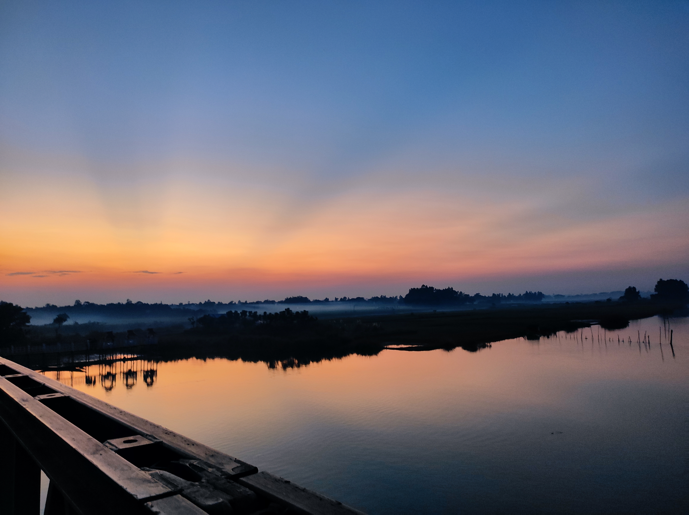

< Go Back

Sunset on Gochamara Steel Bridge
Detail:
This bridge is made of a simple structure using mostly alloy steel, hence the name "Steel Bridge." Due to its location, which offers a beautiful sunset view, especially at the beginning of the winter season, the bridge has gained popularity among locals as a favorite spot to hang out and spend time with friends and family. This has also attracted local vendors to open small coffee shops near the bridge as well.